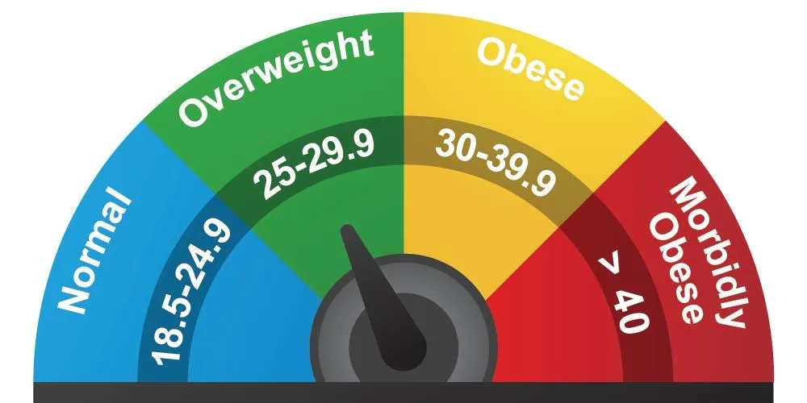

Did you know that though Health and Technology may seem completely different they are actually used together for many things like Biotech, which is a very important field.
Some examples of this field's creations include:But there are also some negative things about Health and Tech. One such thing is how electronics affects your health negatively. I am going to go into each of these things.
BMI Calculator
Body mass index is a value derived from the mass and height of a person. The BMI is defined as the body mass divide square of the body height, and is expressed in units of kg/m², resulting from mass in kilograms and height in metres. 
Stem Cells
According to Stanford Childrens Health "Stem cells are special human cells that are able to develop into many different cell types. This can range from muscle cells to brain cells. In some cases, they can also fix damaged tissues. Researchers believe that stem cell-based therapies may one day be used to treat serious illnesses such as paralysis and Alzheimer disease.Stem cells are divided into 2 main forms. They are embryonic stem cells and adult stem cells.Embryonic stem cells. The embryonic stem cells used in research today come from unused embryos. These result from an in vitro fertilization procedure. They are donated to science. These embryonic stem cells are pluripotent. This means that they can turn into more than one type of cell. Adult stem cells. There are 2 types of adult stem cells. One type comes from fully developed tissues such as the brain, skin, and bone marrow. There are only small numbers of stem cells in these tissues. They are more likely to generate only certain types of cells. For example, a stem cell that comes from the liver will only make more liver cells. The second type is induced pluripotent stem cells. These are adult stem cells that have been changed in a lab to be more like embryonic stem cells. Scientists first reported that human stem cells could be changed in this way in 2006. Induced pluripotent stem cells don't seem to be different from embryonic stem cells, but scientists have not yet found one that can develop every kind of cell and tissue."
Fitness Trackers
According to Wonderopolis.org "Most modern fitness trackers use a three-axis accelerometer as their primary sensor. This advanced piece of technology measures acceleration based upon start of motion, end of motion, and intensity. Fitness trackers collect data that can then be processed with an internal computer chip and/or a smartphone application."
Genetic Modification
According to Center for Genetics and Society and Kurzgesagt Genetically modifiying humans can be used in two very different ways. Somatic genome editing changes the genes in a patient's cells to treat a medical condition. A few gene therapies are approaching clinical use but remain extraordinarily expensive. By contrast, heritable genome editing would change genes in eggs, sperm, or early embryos to try to control the traits of a future child. Such alterations would affect every cell of the resulting person and all subsequent generations. For these reasons genetically modifiying humans is widely unnaccepted but we still modify plants, even the everyday banana has been modified some other examples are eggplants in Bangladesh that have their own natural pesticide that is harmless to humans and papayas in Hawaii that were modified against the Ringspot virus which is kind of like Somatic Genome editing on plants, we could also use Somatic Genome editing on humans to cure dreaded diseases like Cancer with mere Injections, we could also increase lifespans and make our bodies better at dealing with high energy food reducing obesity. There are many problems we can solve this way.
The effect of Electronics on your Health
MedicalNewsToday.com says "Isolation is an issue with electronics. Technologies, such as social media, are designed to bring people together, yet they may have the opposite effect in some cases. A 2017 study says in young adults aged 19 to 32 years found that people with higher social media use were more than three times as likely to feel socially isolated than those who did not use social media as often. The authors of a 2016 systematic review discussed the link between social networks and mental health issues, such as depression and anxiety. Their research found mixed results. People who had more positive interactions and social support on these platforms appeared to have lower levels of depression and anxiety. However, the reverse was also true. People who perceived that they had more negative social interactions online and who were more prone to social comparison experienced higher levels of depression and anxiety. So, while there does appear to be a link between social media and mental health, a significant determining factor is the types of interactions people feel they are having on these platforms. Electronics also affect your physical health because too much time on them can cause eyestrain, aches, poor posture which can later lead to Musculoskeletal issues, sleep problems, and reduced physical activity.